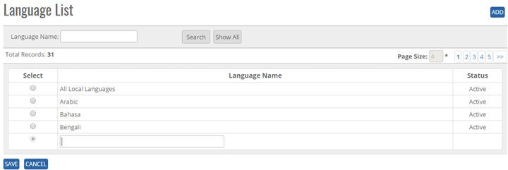

	<section>
		<article>
			<h2>Language<span></span></h2>
			<div>
				<p></p>
				

				<p>Language comes under <b>Commercial</b> module. It can be accessed by user who has rights for this module.</p>

				<p><b>ADD New Language in the master</b> </p>

				<p>Click on Language List page, user will get Add button, search Button, Show all button, Page Record, as shown in below image.</p>

				<p>Click Add Button on top right corner of the page and the following page will open.</p>

				<div class="triangle-border top">
					
				</div>


				<p>User can add Language Name, and status by default it will show Active as shown in above image.</p> 

				<p><b>To add Language in the system, System will be having following fields</b> </p>

				<p>- User will enter Language name in Text Box (alphanumeric is valid)</p>

				<p>Click on <b>Save</b> button user will get alert message <b>"Language Record Updated successfully"</b>.</p>

				<p>User cannot add duplicate Language Record, if user add duplicate Record then User will get alert message <b>"Language Name Already Exist"</b>.</p>

				<p><b>Modifying Existing Language</b></p>

				<p>The user who has right to edit can edit the existing Language list </p>

				<p>Go To>>Master>>Commercial>>Language>>Search language>>Click Radio Button (Language Name)>>EDIT</p>

				<p><b>Note:</b> By default Language status will show ACTIVE.</p>

				<div class="triangle-border top">
					
				</div>


				<p>Click on <b>Save</b> button user will get alert message <b>"Record Added successfully"</b>. Click on Cancel Button, the Record will not get updated.</p>

				<p><b>Note:</b> Language Name will be Unique in the system</p>


				<p><b>De Activate/ Activate Existing Language</b></p>

				<p><b>DeActive</b> - Click on Deactivate Button, once the button is clicked it will ask confirmation message "Are you sure you want to Deactivate this record" with "OK and cancel" button</p>

				<p>If user clicks on OK Button, record will get deactivated and if clicked on Cancel, record will not get deactivated.</p>

				<p><b>Active</b> - Same way once a record is deactivated, system will show Active button. If user clicks on Active button, record will get activated.</p>


				<p><b>Search / Show All Criteria</b></p>

				<p>- User can search the Language name and then click on <b>Search</b>, it will show the result as per the search criteria. User can search name by single alphabet.</p>

				<p>- If user want to check all Language name then click on <b>Show All</b> Button. It will show the list.</p>
				 
				<p>- Click on page no, System will navigate the desired page, per page 10 records will be displayed. </p>
			</div>
		</article>
	</section>
